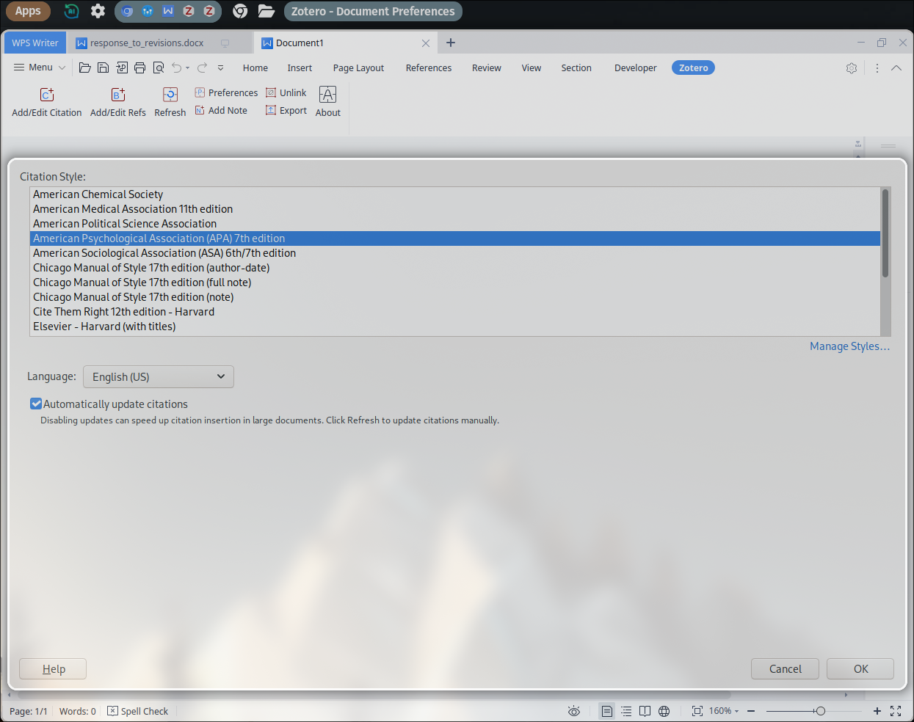

WPS office
I’ve been experimenting with linux recently quite a lot and I really am enjoying the setup that I have right now
One of the things I didn’t think I actually would miss but I kind of do a bit is Microsoft Office
The upside to linux however is that there are free programs that try to replace Microsoft Offices ridiculously priced Office program bundle
This is great, however these free programs don’t quite cut the mustard
LibreOffice
LibreOffice is okay, it has some of the features that Microsoft Office applications have but not all
The UI is terrible though (especially if you’re someone like me who comes from Microsoft Office’s UI) the UI seems really outdated
But Microsoft Offices UI also has quite a number of shortcomings and I found that I really hate the whole idea of ribbons and trying to find something really specific oftentimes leads to some googling (and now probably some chatGPT-ing)
But there is a trick to get the UI in LibreOffice to look better and more like Microsoft Offices
LibreOffice also natively supports Zotero
But over all there is just a massive lack of features in LibreOffice (I won’t list all of them but when creating a presentation recently I found a lot of missing things that made a presentation really difficult, and so I had to spin-up my Windows machine instead)
WPS office
Then I came across a reddit thread in the Linux community that specifically discussed the available alternatives to Microsoft Office on Linux
I found WPS office and was pleasantly surprised at the number of features that it really has
But one thing that it doesn’t support is a zotero plugin
I came across this thread with others like me that were disappointed by this: WPS Office integration with zotero
WPS Office plugin for zotero
- There appears to be a zotero plugin made on github
It was easy to install by following these steps
1. git clone https://github.com/tankwyn/WPS-Zotero.git
2. cd WPS-Zotero
3. ./install.py… and that’s it
Straight out of the box the plugin works for WPS Office

Maybe time to write using latex?
I have thought about this for a while
I use neovim and do a lot of writing just using markdown files
I think that I would really like to be able to move entirely away from relying on a word processor program but for things like making presentations I don’t see any other alternatives than either using online Microsoft Office, Google docs, LibreOffice or WPS Office
In neovim I can create and automatically preview markdown files in a browser
I can then use the zotero plugin to put references into the markdown file from zotero
I can then convert this markdown file to a .pdf or .docx with a filter to render the references from the zotero plugin first, and then a second filter to render these references into apa style for example:
pandoc test.md -o test.pdf -F otref.py --citeproc --csl /mnt/g/apa.csl
Then with some yaml header and some additional formatting specific to latex and/ or pandoc rendering inside the document itself its possible to get a document that looks pretty nice
Pandoc additionally supports some html tags too for example:
<span style="font-variant:small-caps;">This will be in small caps!</span>
(Even quarto renders the html tags, but this makes sense since it is essentially a wrapper for pandoc that also executes and runs r and python code This will be in small caps!`)
Therefore, I think in the future I will be switching to using just a markdown editor like neovim will be beneficial in the long run. It makes sense that the idea of a word processor is to write words and not to be spend hours upon hours formatting and getting everything to look pretty.
Here’s a blog post I like that shows of vims power in latex using snippets